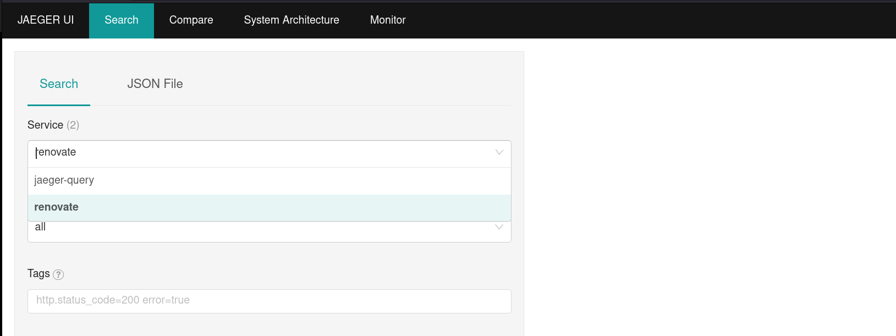
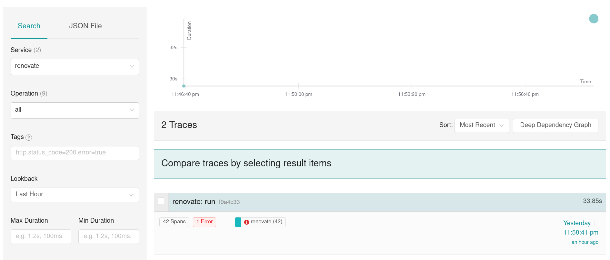

OpenTelemetry¶
Requirements:
- docker-compose
Prepare setup¶
Create a docker-compose.yaml and otel-collector-config.yml file as seen below in a folder.
name: renovate-otel-demo
services:
# Jaeger for storing traces
jaeger:
image: jaegertracing/jaeger:2.14.1
ports:
- '16686:16686' # Web UI
- '4317' # OTLP gRPC
- '4318' # OTLP HTTP
# Prometheus for storing metrics
prometheus:
image: prom/prometheus:v3.9.1
ports:
- '9090:9090' # Web UI
- '4318' # OTLP HTTP
command:
- --web.enable-otlp-receiver
# Mirror these flags from the Dockerfile, because `command` overwrites the default flags.
# https://github.com/prometheus/prometheus/blob/5b5fee08af4c73230b2dae35964816f7b3c29351/Dockerfile#L23-L24
- --config.file=/etc/prometheus/prometheus.yml
- --storage.tsdb.path=/prometheus
otel-collector:
# Using the Contrib version to access the spanmetrics connector.
# If you don't need the spanmetrics connector, you can use the standard version
image: otel/opentelemetry-collector-contrib:0.144.0
volumes:
- ./otel-collector-config.yml:/etc/otelcol-contrib/config.yaml
ports:
- '4318:4318' # OTLP HTTP ( exposed to the host )
- '4317:4317' # OTLP gRPC ( exposed to the host )
depends_on:
- jaeger
- prometheus
receivers:
otlp:
protocols:
grpc:
endpoint: 0.0.0.0:4317
http:
endpoint: 0.0.0.0:4318
exporters:
otlp/jaeger:
endpoint: jaeger:4317
tls:
insecure: true
otlphttp/prometheus:
endpoint: http://prometheus:9090/api/v1/otlp
debug:
# verbosity: normal
connectors:
spanmetrics:
histogram:
exponential:
dimensions:
- name: http.method
default: GET
- name: http.status_code
- name: http.host
dimensions_cache_size: 1000
aggregation_temporality: 'AGGREGATION_TEMPORALITY_CUMULATIVE'
exemplars:
enabled: true
processors:
batch:
extensions:
health_check:
pprof:
zpages:
service:
extensions: [pprof, zpages, health_check]
pipelines:
traces:
receivers: [otlp]
exporters:
- otlp/jaeger
# Send traces to connector for metrics calculation
- spanmetrics
# Enable debug exporter to see traces in the logs
#- debug
processors: [batch]
metrics:
receivers:
- otlp # Receive metrics from Renovate.
- spanmetrics # Receive metrics calculated by the spanmetrics connector.
processors: [batch]
exporters:
- otlphttp/prometheus
# Enable debug exporter to see metrics in the logs
# - debug
Start setup using this command inside the folder containing the files created in the earlier steps:
docker-compose up
This command will start:
- an OpenTelemetry Collector
- an instance of Jaeger for traces
- and Prometheus
Jaeger will be now reachable under http://localhost:16686.
Run Renovate with OpenTelemetry¶
To start Renovate with OpenTelemetry enabled run following command, after pointing to your config.js config file:
docker run \
--rm \
--network renovate-otel-demo_default \
-e OTEL_EXPORTER_OTLP_ENDPOINT=http://otel-collector:4318 \
-v "/path/to/your/config.js:/usr/src/app/config.js" \
renovate/renovate:latest
You should now see trace_id and span_id fields in the logs.
INFO: Repository finished (repository=org/example)
"durationMs": 5574,
"trace_id": "f9a4c33852333fc2a0fbdc163100c987",
"span_id": "4ac1323eeaee
Traces¶
Open now Jaeger under http://localhost:16686.
You should now be able to pick renovate under in the field service field.

Select Find Traces to search for all Renovate traces and then select one of the found traces to open the trace view.

You should be able to see now the full trace view which shows more information about what is happening, such as HTTP requests, execution of commands or Git operations, and how long Renovate takes to process a given branch:
![A screenshot of the Jaeger OpenTelemetry tracing UI, which shows an in-depth tracing view of a Renovate run against a single repository. The trace view shows the Renovate "splits", i.e. init, extract, lookup and update shown, with a view of how long each of the splits take overall. The trace view also shows HTTP calls, calls to the git command-line tools, some function names like extractAllDependencies, package manager names like composer or github-actions under the extract and lookup splits, and general execution of commands (prefixed by rawExec:. The view also shows that under the update split, there is a trace per branch, so we can see that the renovate/actions-checkout-6.x took less time to process than the renovate/phpstan-phpstan-2.x-lockfile branch.](../../assets/images/opentelemetry_trace_viewer.png)
Metrics¶
Additional to the received traces some metrics are calculated. This is achieved using the spanmetrics connector. The previously implemented setup will produce following metrics, which pushed to Prometheus:
### Example of internal spans
traces_span_metrics_calls_total{http_method="GET", job="renovatebot.com/renovate", service_name="renovate", span_kind="SPAN_KIND_INTERNAL", span_name="repository", status_code="STATUS_CODE_UNSET"} 2
traces_span_metrics_calls_total{http_method="GET", job="renovatebot.com/renovate", service_name="renovate", span_kind="SPAN_KIND_INTERNAL", span_name="run", status_code="STATUS_CODE_UNSET"} 2
### Example of http calls from Renovate to external services
traces_span_metrics_calls_total{http_host="api.github.com:443", http_method="POST", http_status_code="200", job="renovatebot.com/renovate", service_name="renovate", span_kind="SPAN_KIND_CLIENT", span_name="POST", status_code="STATUS_CODE_UNSET"} 4
### Example histogram metrics
traces_span_metrics_duration_milliseconds_bucket{http_method="GET", job="renovatebot.com/renovate", le="8", service_name="renovate", span_kind="SPAN_KIND_INTERNAL", span_name="repository", status_code="STATUS_CODE_UNSET"} 0
...
traces_span_metrics_duration_milliseconds_bucket{http_method="GET", job="renovatebot.com/renovate", le="2000", service_name="renovate", span_kind="SPAN_KIND_INTERNAL", span_name="repository", status_code="STATUS_CODE_UNSET"} 0
traces_span_metrics_duration_milliseconds_bucket{http_method="GET", job="renovatebot.com/renovate", le="5000", service_name="renovate", span_kind="SPAN_KIND_INTERNAL", span_name="repository", status_code="STATUS_CODE_UNSET"} 1
traces_span_metrics_duration_milliseconds_bucket{http_method="GET", job="renovatebot.com/renovate", le="15000", service_name="renovate", span_kind="SPAN_KIND_INTERNAL", span_name="repository", status_code="STATUS_CODE_UNSET"} 1
traces_span_metrics_duration_milliseconds_bucket{http_method="GET", job="renovatebot.com/renovate", le="10000", service_name="renovate", span_kind="SPAN_KIND_INTERNAL", span_name="repository", status_code="STATUS_CODE_UNSET"} 1
traces_span_metrics_duration_milliseconds_bucket{http_method="GET", job="renovatebot.com/renovate", le="+Inf", service_name="renovate", span_kind="SPAN_KIND_INTERNAL", span_name="repository", status_code="STATUS_CODE_UNSET"} 1
traces_span_metrics_duration_milliseconds_sum{http_method="GET", job="renovatebot.com/renovate", service_name="renovate", span_kind="SPAN_KIND_INTERNAL", span_name="repository", status_code="STATUS_CODE_UNSET"} 4190.694209
traces_span_metrics_duration_milliseconds_count{http_method="GET", job="renovatebot.com/renovate", service_name="renovate", span_kind="SPAN_KIND_INTERNAL", span_name="repository", status_code="STATUS_CODE_UNSET"} 1
The spanmetrics connector creates two sets of metrics.
Calls metric¶
At first there are the traces_span_metrics_calls_total metrics.
These metrics show how often specific trace spans have been observed.
For example:
traces_span_metrics_calls_total{http_method="GET", job="renovatebot.com/renovate", service_name="renovate", span_kind="SPAN_KIND_INTERNAL", span_name="repositories", status_code="STATUS_CODE_UNSET"} 2signals that 2 repositories have been renovated.traces_span_metrics_calls_total{http_method="GET", job="renovatebot.com/renovate", service_name="renovate", span_kind="SPAN_KIND_INTERNAL", span_name="run", status_code="STATUS_CODE_UNSET"} 1represents how often Renovate has been run.
If we combine this using the PrometheusQueryLanguage ( PromQL ), we can calculate the average count of repositories each Renovate run handles.
traces_span_metrics_calls_total{span_name="repository",service_name="renovate"} / traces_span_metrics_calls_total{span_name="run",service_name="renovate"}
These metrics are generated for HTTP call spans too:
traces_span_metrics_calls_total{http_host="prometheus-community.github.io:443", http_method="GET", http_status_code="200", job="renovatebot.com/renovate", service_name="renovate", span_kind="SPAN_KIND_CLIENT", span_name="GET", status_code="STATUS_CODE_UNSET"} 5
Latency buckets¶
The second class of metrics exposed are the latency-focused buckets, that allow creating heatmaps.
A request is added to a backed if the latency is bigger than the bucket value (le). request_duration => le
As an example if we receive a request which need 1.533s to complete get following metrics:
traces_span_metrics_duration_milliseconds_bucket{http_host="api.github.com:443",le="0.1"} 0
traces_span_metrics_duration_milliseconds_bucket{http_host="api.github.com:443",le="1"} 0
traces_span_metrics_duration_milliseconds_bucket{http_host="api.github.com:443",le="2"} 1
traces_span_metrics_duration_milliseconds_bucket{http_host="api.github.com:443",le="6"} 1
traces_span_metrics_duration_milliseconds_bucket{http_host="api.github.com:443",le="10"} 1
traces_span_metrics_duration_milliseconds_bucket{http_host="api.github.com:443",le="100"} 1
traces_span_metrics_duration_milliseconds_bucket{http_host="api.github.com:443",le="250"} 1
traces_span_metrics_duration_milliseconds_bucket{http_host="api.github.com:443",le="9.223372036854775e+12"} 1
traces_span_metrics_duration_milliseconds_bucket{http_host="api.github.com:443",le="+Inf"} 1
traces_span_metrics_duration_milliseconds_sum{http_host="api.github.com:443"} 1.533
traces_span_metrics_duration_milliseconds_count{http_host="api.github.com:443"} 1
Now we have another request which this time takes 10s to complete:
traces_span_metrics_duration_milliseconds_bucket{http_host="api.github.com:443",le="0.1"} 0
traces_span_metrics_duration_milliseconds_bucket{http_host="api.github.com:443",le="1"} 0
traces_span_metrics_duration_milliseconds_bucket{http_host="api.github.com:443",le="2"} 1
traces_span_metrics_duration_milliseconds_bucket{http_host="api.github.com:443",le="6"} 1
traces_span_metrics_duration_milliseconds_bucket{http_host="api.github.com:443",le="10"} 2
traces_span_metrics_duration_milliseconds_bucket{http_host="api.github.com:443",le="100"} 2
traces_span_metrics_duration_milliseconds_bucket{http_host="api.github.com:443",le="250"} 2
traces_span_metrics_duration_milliseconds_bucket{http_host="api.github.com:443",le="9.223372036854775e+12"} 2
traces_span_metrics_duration_milliseconds_bucket{http_host="api.github.com:443",le="+Inf"} 2
traces_span_metrics_duration_milliseconds_sum{http_host="api.github.com:443"} 11.533
traces_span_metrics_duration_milliseconds_count{http_host="api.github.com:443"} 2
More about the functionality can be found on the Prometheus page for metric types.